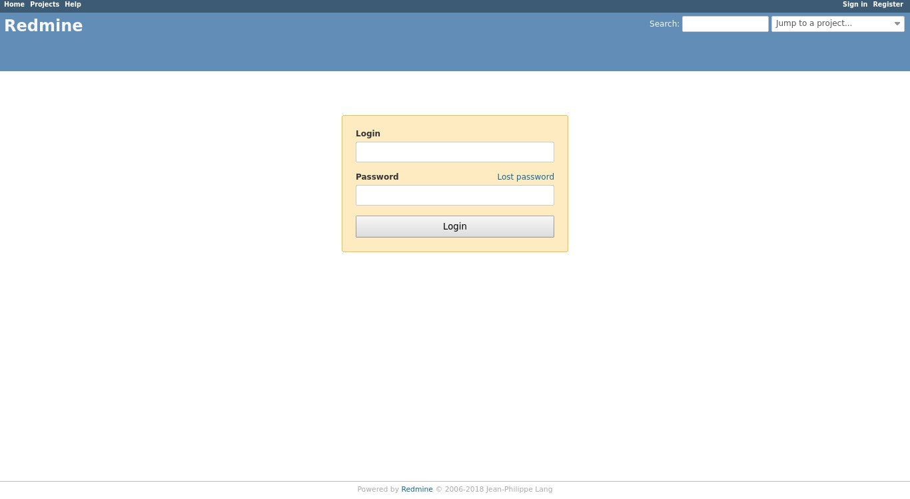
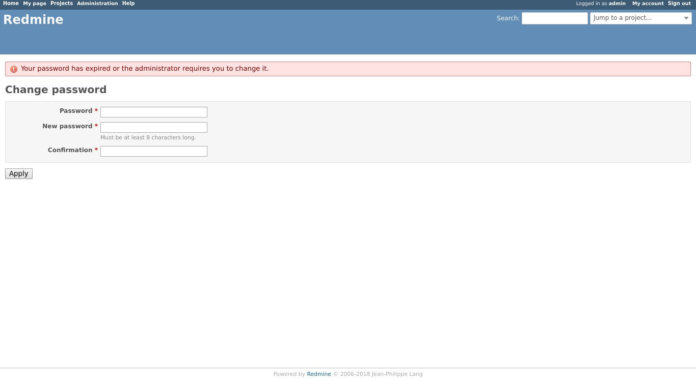

如何在 Debian 9 上安装和配置 Redmine
Redmine 是一个免费的开源项目管理和问题跟踪应用程序。它是跨平台并支持多种数据库，构建在 Ruby on Rails 框架之上。
Redmine 包括对多个项目的管理，维基，问题跟踪系统，论坛，日历，电子邮件通知等的支持。
在本教程中，我们将向您展示如何使用 MySQL 作为数据库后端和 Passenger + Nginx 作为 Ruby 应用程序服务器在 Debian 9 服务器上安装和配置最新版本的 Redmine 。
先决条件
在继续本教程之前，请确保您已满足以下先决条件：
- 拥有指向您的服务器公共 IP 的域名。我们会用的
example.com。 - 以具有 sudo 权限的用户身份登录。
- 已经安装 Nginx。
- 已经您的域名安装 SSL 证书。
创建 MySQL 数据库
Redmine 支持 MySQL/MariaDB ， Microsoft SQL Server ， SQLite 3 和 PostgreSQL 。我们将使用 MariaDB 作为数据库后端。确保您的计算机上至少安装了 MySQL 5.7 或 MariaDB 10.3 。
如果您的 Debian 服务器上没有安装 MariaDB 或 MySQL ，您可以参考这个说明进行安装。
首先输入以下命令登录 MySQL 控制台：
sudo mysql
运行以下 SQL 语句以创建新数据库：
CREATE DATABASE redmine CHARACTER SET utf8mb4;
创建一个新的 MySQL 用户帐户并授予对数据库的访问权限：
GRANT ALL ON redmine.* TO 'redmine'@'localhost' IDENTIFIED BY 'change-with-strong-password';
不要忘记使用您自己的强密码更改上面的密码 change-with-strong-password 。
完成后，键入以下命令从 MariaDB 控制台注销：
EXIT;
安装 Ruby
在 Debian 上安装 Ruby 的最简单方法是使用 apt 包管理器：
输入以下命令安装 Ruby ：
sudo apt install ruby-full
在撰写本文时， Debian 存储库中 2.3.3p222 的版本由最新版本的 Redmine 支持。
如果要通过 Rbenv 或 RVM 安装 Ruby ，请访问本教程。
安装 Passenger 和 Nginx
Passenger 是 Ruby ， Node.js 和 Python 的快速轻量级 Web 应用程序服务器，可与 Apache 和 Nginx 集成。我们将安装 Passenger 作为 Nginx 模块。
在继续执行以下步骤之前，请确保已安装 Nginx 。
安装必要的软件包以启用 https 存储库：
sudo apt install dirmngr gnupg apt-transport-https ca-certificates software-properties-common
导入存储库 GPG 密钥并启用 Phusionpassenger 存储库：
sudo apt-key adv --recv-keys --keyserver hkp://keyserver.ubuntu.com:80 561F9B9CAC40B2F7sudo add-apt-repository 'deb https://oss-binaries.phusionpassenger.com/apt/passenger stretch main'
更新软件包列表并安装 Passenger Nginx 模块：
sudo apt update
sudo apt install libnginx-mod-http-passenger
在 Debian 上安装 Redmine
首先安装构建 Redmine 所需的依赖项：
sudo apt install build-essential libmariadbclient-dev imagemagick libmagickwand-dev curl ruby-dev libxslt-dev libxml2-dev zlib1g-dev
在撰写本文时， Redmine 的最新稳定版本是 4.0.4 版。
在继续下一步之前，您应该检查 Redmine 下载页面以获取更新版本。
1.下载 Redmine
使用以下 curl 命令下载 Redmine 存档：
sudo curl -L http://www.redmine.org/releases/redmine-4.0.4.tar.gz -o /tmp/redmine.tar.gz
下载完成后，提取存档并将其移动到 /opt 目录：
cd /tmpsudo tar zxf /tmp/redmine.tar.gzsudo mv /tmp/redmine-4.0.4 /opt/redmine
2.配置 Redmine 数据库
复制 Redmine 示例配置文件：
sudo cp /opt/redmine/config/database.yml.example /opt/redmine/config/database.yml
使用文本编辑器打开文件：
sudo nano /opt/redmine/config/database.yml
搜索该 production 部分并输入我们之前创建的 MySQL 数据库和用户信息：
/opt/redmine/config/database.yml
production:
adapter: mysql2
database: redmine
host: localhost
username: redmine
password: "change-with-strong-password"
encoding: utf8
完成后，保存文件并退出编辑器。
3.安装 Ruby 依赖项
导航目录到 redmine 目录并安装 bundler 和其他 Ruby 依赖项：
cd /opt/redmine/
sudo gem install bundler --no-rdoc --no-ri
sudo bundle install --without development test postgresql sqlite
4.生成密钥并迁移数据库
运行以下命令以生成密钥并迁移数据库：
cd /opt/redmine/sudo bundle exec rake generate_secret_tokensudo RAILS_ENV=production bundle exec rake db:migrate
5.设置正确的权限
Nginx 作为 www-data 用户和组运行。通过发出以下 chown 命令设置正确的权限：
sudo chown -R www-data: /opt/redmine/
配置 Nginx
到目前为止，您应该已经在系统上安装了 Nginx 和 SSL 证书，如果没有，请检查本教程的先决条件。
打开文本编辑器并创建以下 Nginx 服务器块文件：
sudo nano /etc/nginx/sites-available/example.com
/etc/nginx/sites-available/example.com
# Redirect HTTP -> HTTPS
server {
listen 80;
server_name www.example.com example.com;
include snippets/letsencrypt.conf;
return 301 https://example.com$request_uri;
}
# Redirect WWW -> NON WWW
server {
listen 443 ssl http2;
server_name www.example.com;
ssl_certificate /etc/letsencrypt/live/example.com/fullchain.pem;
ssl_certificate_key /etc/letsencrypt/live/example.com/privkey.pem;
ssl_trusted_certificate /etc/letsencrypt/live/example.com/chain.pem;
include snippets/ssl.conf;
return 301 https://example.com$request_uri;
}
server {
listen 443 ssl http2;
server_name example.com;
root /opt/redmine/public;
# SSL parameters
ssl_certificate /etc/letsencrypt/live/example.com/fullchain.pem;
ssl_certificate_key /etc/letsencrypt/live/example.com/privkey.pem;
ssl_trusted_certificate /etc/letsencrypt/live/example.com/chain.pem;
include snippets/ssl.conf;
include snippets/letsencrypt.conf;
# log files
access_log /var/log/nginx/example.com.access.log;
error_log /var/log/nginx/example.com.error.log;
passenger_enabled on;
passenger_min_instances 1;
client_max_body_size 10m;
}
不要忘记将 example.com 替换为 Redmine 域，并设置 SSL 证书文件的正确路径。此配置中使用的片段在本指南中创建。
通过在 sites-enabled 目录中创建符号链接来启用服务器块：
sudo ln -s /etc/nginx/sites-available/example.com /etc/nginx/sites-enabled/
在重新启动 Nginx 服务之前，请进行测试以确保没有语法错误：
sudo nginx -t
如果没有错误，输出应如下所示：
nginx: the configuration file /etc/nginx/nginx.conf syntax is ok
nginx: configuration file /etc/nginx/nginx.conf test is successful
最后，键入以下命令重启 Nginx 服务：
sudo systemctl restart nginx
访问 Redmine
打开浏览器，键入您的域并假设安装成功，将出现类似于以下内容的屏幕：

Redmine 的默认登录凭据是：
- 用户名： admin
- 密码： admin
当您第一次登录时，系统将提示您更改密码，如下所示：

更改密码后，您将被重定向到用户帐户页面。
结论
您已在 Debian 系统上成功安装了 Redmine 。您现在应该查看 Redmine 文档并了解有关如何配置和使用 Redmine 的更多信息。